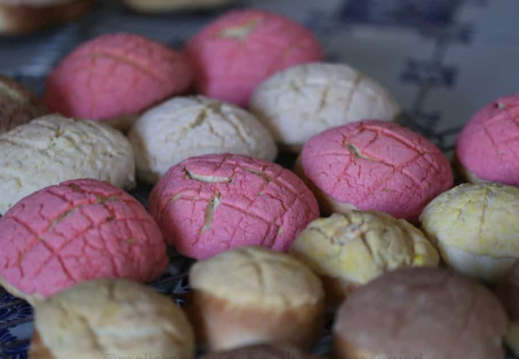

Pan Brioche con Costra de Masa Dulce
Brioche horneado con una costra crocante de masa dulce por encima; se sirve tibio con mantequilla.
Bs. 18"Dos momentos, una misma cumbre."
Café de día · Coctelería de noche
Cafetería de especialidad: café de origen boliviano, pastelería básica pero poco común y un ambiente cálido para trabajar, estudiar o reunirte con calma.
El mismo lugar se transforma: coctelería sencilla con ingredientes andinos poco comunes, luz cálida y una atmósfera pensada para las noches frías de Potosí.
Centro histórico de Potosí, a pasos de la Plaza 10 de Noviembre y de la Universidad Autónoma Tomás Frías.